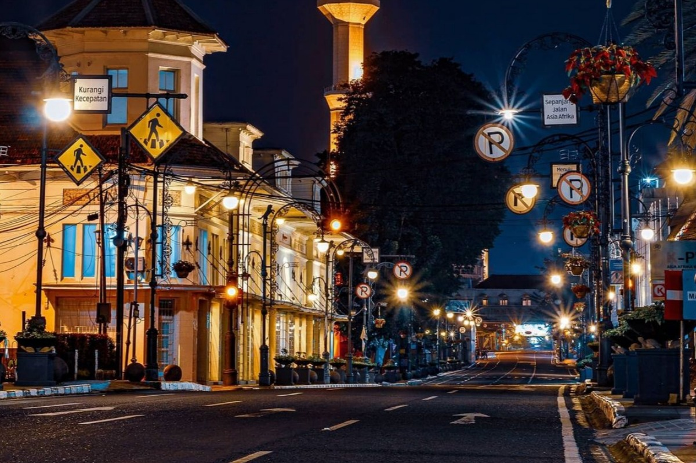
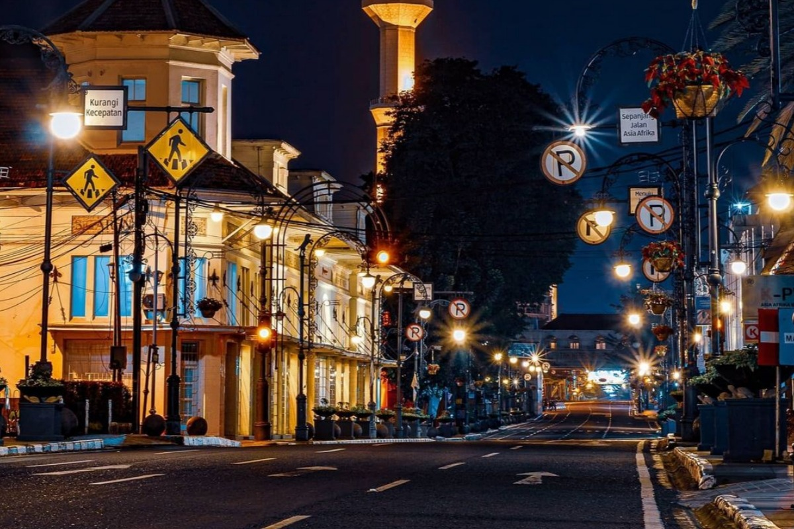

Total Objek Cagar Budaya
124
+5 Objek Baru dalam 6 bulan terakhirRekomendasi Populer
Gedung Sate
Waktu Kunjungan Terbaik: Sore HariEvent Warisan Mendatang
7
2 Event skala besar minggu iniTimeline Aktivitas Warisan
Pameran Seni Kontemporer 'Jeune Fille'
Diadakan di Museum Konferensi Asia Afrika. Klik untuk melihat galeri foto.
Seni
Lihat
Proyek Revitalisasi Bangunan Cikapundung
Pembaruan data menunjukkan status restorasi telah mencapai 80%.
Sejarah
Detail
Pengumuman: Festival Budaya Angklung
Akan diadakan di Lapangan Tegallega pada tanggal 20 Desember 2025.
Budaya
Daftar